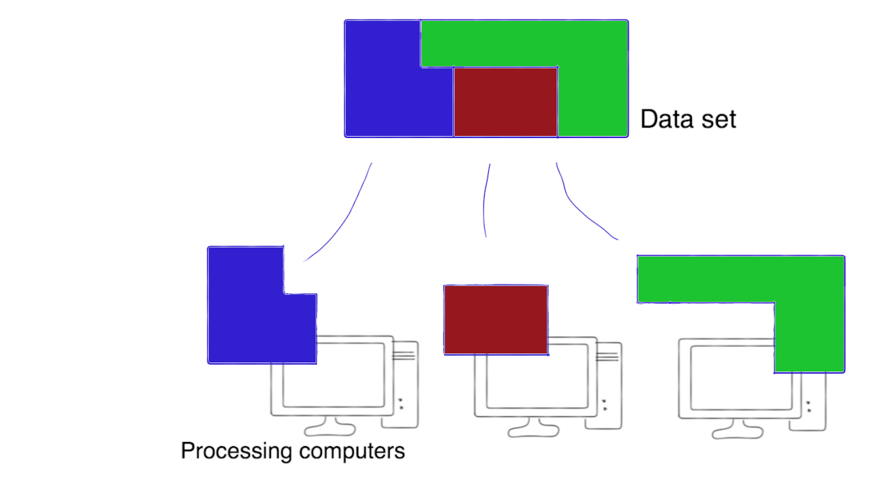
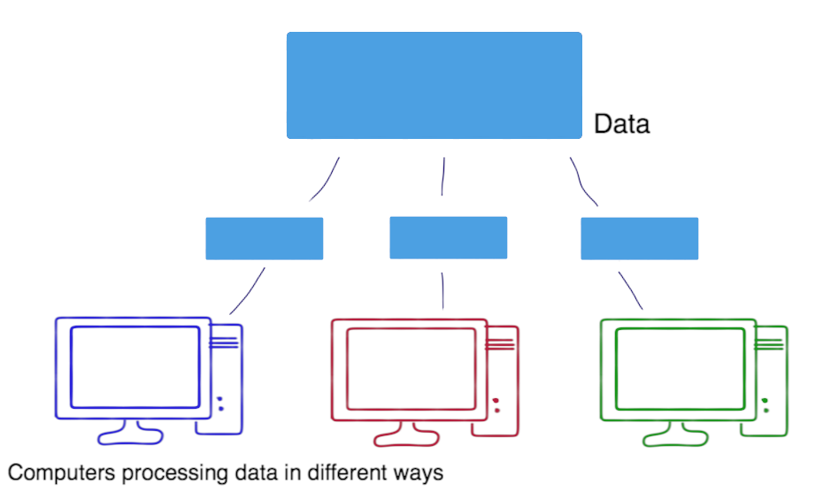
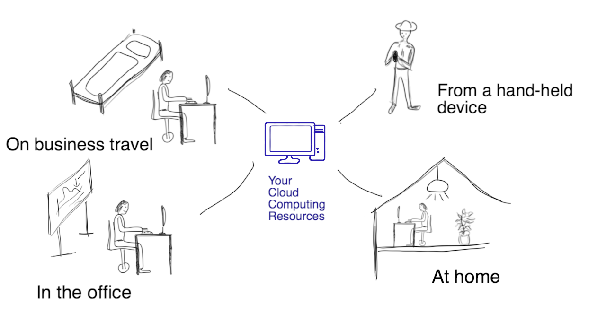

Module 3
Use Cases
Introduction
“The data tsunami is changing everything in science. Every discipline is now confronted with it—a vast exploration of data that comes from instruments, from online sources, from the web, from social media. Analyzing this data can’t be done on a PC.”
— Dennis Gannon, director of Cloud Research Strategy for Microsoft Research Connections
This module will discuss five fast ways to make the cloud work for your research. Common use cases for the NeCTAR Research Cloud and the research outcomes they can enable will be described.
Video
The following video goes through the content in this module.
https://www.youtube.com/watch?v=PkYdBVnxniA
The Research Cloud
The Research Cloud provides the necessary processing power and storage that is required for computationally and storage intensive projects. That means the users of the application do not need to have huge processing power or storage capabilities locally. Cloud computing allows us to eliminate the use of standalone machines and provides all parties equal access to the models and data on a standard platform.
The NeCTAR National Research Cloud empowers researchers with new self-service abilities to publish research data, share knowledge and rapidly deploy and access software applications without the burden of operating their own computer servers.
The NeCTAR Research Cloud Services provide an Infrastructure-as-a-Service (IaaS): Researchers can run their own virtual machines and manage their storage.

The Research Cloud uses the successful, open-source OpenStack cloud computing software platform. OpenStack includes compatibility with Amazon EC2 (Amazon’s computing service) and Amazon S3 (Amazon’s object storage service) APIs and thus client applications written for Amazon Web Services (AWS) can be used with OpenStack and NeCTAR Services with minimal porting effort, but it is recommended to use the native OpenStack APIs for access to all the NeCTAR cloud features.
To illustrate a few examples in which you may benefit from using the Research Cloud, we will discuss a few common use cases in this Module.
Conventions
The notation throughout the training documents can be interpreted as follows:
Words in italics are used for names and terminology, e.g. name of a software, or name of a computing concept. It may also just emphasise a word in the traditional way. Quotations are also written in italics and are put in between quotatioin marks.
Words in bold are used to highlight words which identify important concepts of a paragraph, to make it easier for users to skim through the text to find a paragraph which explains a certain idea, concept or technology.
Additional information which is optional to read is displayed in info boxes like this one.

Important information is displayed in boxes like this one.

Definition of terms are displayed in boxes of this style.

Possibly specific prerequisites for reading a particular section are contained in this type of box at the beginning of a section.
Case 1 - EPP
You have an “embarrassingly parallel problem” (short: EPP). “Embarrassingly parallel problems” are characterized by being trivially parallelizable: no complex methods have to be applied to solve the problem by means of parallel methods, for example solving each part of the problem in a separate computer. This may save you huge amounts of time for your results to be finished.
For example, a very large data set can be chopped into pieces which are then dispatched to various computers for processing; when finished, the resulting data is re-assembled.

Or in another example, copies of a smaller data set are distributed across computers to perform different computations on it, and when all the individual analyses of the data are finished, the results are summarized.

The individual computers don’t have to be super fast, but instead the power lies in having a huge number of computers working at solving the problem simultaneously.
Software like MapReduce can be used to manage splitting the problem into several pieces and dispatching them to different computers.
Embarrassingly parallel problems will be re-visited in Module 4. In Module 7, we will discuss how to set up and access a virtual machine.
Case 2 - Data Sharing
You want shared access to data to collaborate with other researchers. You may request the amount of storage you require and give collaborators access to the on-line storage.
Depending on your needs, you may request a block of storage, which will be accessible as a hard drive. Collaborators will need access to the virtual machine which has the hard-drive attached to it, then they can copy files across. An easier way is to use object storage, to which easy-to-use interfaces (e.g. via web browser) are available, which can be made available to collaborators to upload and download files.
Types of storage and access to it will be introduced in Module 6 and further discussed in the later modules.
Case 3 - On-demand Computing
You need compute power only at a certain time (on-demand), e.g. when results for a paper need to be processed quickly. You don’t need to invest in a large amount of PCs which take up space in your office, sitting idle until they are needed, and becoming outdated within a few years.
You can easily access the required amount of computing power and storage in the cloud, only for the time you need to run your experiments. You don’t have to worry about maintenance and re-investment in new, faster computers.
In Module 7, we will discuss how to set up and access a virtual machine.
Case 4 - Remote Access
You want to access your large-scale computing resources, data and tools from any platform, and any location. For example, you want to check on the state of your running experiments while on conference travel, or using your laptop or tablet at home. In the Research Cloud, you can configure your own system: you may choose your OS and install the software you require. You can access this virtual computer from anywhere via the Internet.

In Module 7, we will discuss how to set up and access a virtual machine from a remote location, including access via a remote desktop.
Case 5 - Research App
You want to develop your own research app that can be accessed from a variety of devices and from anywhere, from several people simultaneously. For example, you want to undertake a field study. Your students and collaborators venture out to collect data and upload their results and materials directly to your app on the Research Cloud. There is no need to deal with a large amount of E-mails in which people send their results as attachments.
You can install and run your app on a virtual machine. In Module 7, we will discuss how to set up and access a virtual machine.
Case 6 - Reproducible Research
You want to provide a snapshot of your virtual machine including all tools, data and documentation required to reproduce the results. You may even want to cite this snapshot in a paper, so other researchers who would like to to reproduce your experiments can launch the virtual machine and have access to your entire experimental environment: the code, the data, notes, etc. There is no need for them to install a set of complex, version-sensitive programs with inter-dependencies. Reproducibility is facilitated and this approach also takes a lot of work off the researcher.
Module 9 will discuss how you can create a snapshot of your VM and share it with others.
Case 7 - Training
You want to provide a platform for students to flexibly get access to materials from anywhere, e.g. their home PCs, laptop, etc. Universities will not have to invest in expensive laboratory facilities and staff.
You can create a template virtual machines and install the required software on it. Then, you may launch several copies of this pre-configured virtual machine — if you launched only one for all students to share, the workload on it may be a bit high, and students may experience problems with the computer’s performance. So you should distribute the workload over several machines. For example, if the students work in groups, you can assign one virtual machine for each group, and each student may have their own login on their groups virtual machine. If you are allowed enough resources on the NeCTAR Research Cloud, you could even assign one VM per student.
After the class is finished, you can shut down all the virtual machines and have no trouble with idle facilities or lost investment.
In the next term or session, when you run the class again, you may use the same pre-configured VM again, without the need to set it up again.
In Module 7, we will discuss how to set up a virtual machine. Part of this tutorial will include you installing software on it. In Module 9 we will then see how to create a snapshot of the pre-configured VM, and how to launch a new VM from it again. It is very easy to launch several copies of the same VM.
Case 8 - Big Data demands
You have “big data” demands: you need easy and quick access to large amounts of storage.
When you process this data with your dedicated application, your running application should be “close to the data”: it should run on a computer which is directly attached to the storage via a faster connection than the Internet. Therefore, it is not a good solution to only request storage from some on-line storage provider and then hook up your office computer with the storage via the network and then process the from your office computer — this may take forever! So you need a computer running at the same facilities as your storage is physically located. The Research Cloud enables you to do that: you can request storage and a virtual machine at the same facilities and then analyze your data with your virtual machine.
Module 7 will go into detail about creating a virtual machine, set up your storage, and hook it up with your VM.
Summary
This is the end of Module 3. You should now have a better idea of what uses and benefits the Research Cloud can have. You may have identified one or a few use cases that apply to your research.
The following use cases have been discussed:
- Embarrassingly parallel problems (EPP)
- Data Sharing with other researchers
- On-demand Computing for research and teaching
- Remote Access to services from anywhere
- Developing a Research App
- Reproducible Research
- Teaching
- Big Data demands
However there is a lot more to it—there are plenty more use cases. After following the next Modules, you will know enough about the Research Cloud to identify your very own and individual use case.
You may now continue with Module 4.